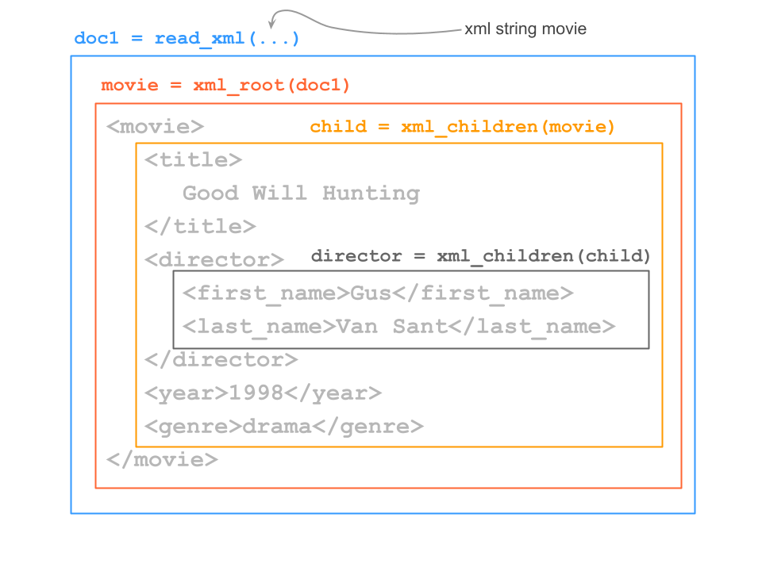
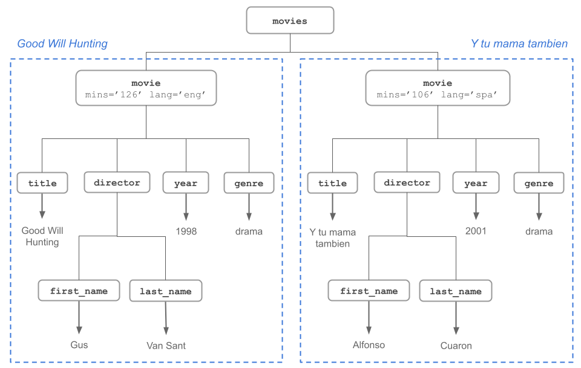

library(xml2)
library(stringr)5 Parsing XML
The goal of this chapter is to describe how we can parse XML content with the R package xml2
You will need the following packages
We’ll cover a variety of situations you most likely will find yourself dealing with:
R package
"xml2"Navigating the XML tree structure
XPath expressions
5.1 What is parsing?
Getting data from the web often involves reading and processing content from XML and HTML documents. This is known as parsing.
The dictionary defines “parse” as:
analyze (a sentence) into its parts and describe their syntactic roles.
In regards to “computing”, parse has to do with:
analyze (a string or text) into logical syntactic components, typically in order to test conformability to a logical grammar.
an act of or the result obtained by parsing a string or a text.
According to Wikipedia, a parser is:
A parser is a software component that takes input data (frequently text) and builds a data structure —often some kind of parse tree, abstract syntax tree or other hierarchical structure— giving a structural representation of the input, checking for correct syntax in the process
5.2 R package "xml2"
The package "xml2" is designed for one major purpose, namely, to parse XML and HTML content. Remember that HTML is one the countless XML dialects.
As of this writing, "xml2" has minimal functionality for writing content in XML. Hadley Wickham has mentioned that he plans to add more functions for writing XML. So it is possible that in the future, "xml2" integrates more writing-XML functionality. Having said that, we will focus exclusively on reading XML content.
We’ll cover 4 major types of tasks that we can perform with "xml2"
- parsing (ie reading) xml / html content
- obtaining descriptive information about parsed contents
- navigating the tree structure (i.e. accessing its components)
- querying and extracting data from parsed contents
5.2.1 Parsing Functions
There are two main parsing functions:
read_xml()read_html()
For XML files in general, you should use read_xml(). For HTML files, then it’s better to use read_html() because it is more robust, and can handle no well-formed HTML files, which are not uncommon to deal with in practice.
The main input for these reading functions is either a string, an R connection, or a raw vector.
The string can be either a path, a URL or literal xml. URL’s will be converted into connections either using base::url() or, if installed, curl::curl(). Local paths ending in .gz, .bz2, .xz, .zip will be automatically uncompressed.
Both read_xml() and read_html() return an object of class "xml_document".
Let’s see an example. Consider one of the examples from the previous chapter, for instance some content in XML:
<movie mins="126" lang="en">
<title>Good Will Hunting</title>
<director>
<first_name>Gus</first_name>
<last_name>Van Sant</last_name>
</director>
<year>1998</year>
<genre>drama</genre>
</movie>For illustration purposes, let’s take the XML content, treating it as a single character string, that we then pass to read_xml():
# toy example with xml string
movie <- read_xml(
"<movie>
<title>Good Will Hunting</title>
<director>
<first_name>Gus</first_name>
<last_name>Van Sant</last_name>
</director>
<year>1998</year>
<genre>drama</genre>
</movie>")
movie{xml_document}
<movie>
[1] <title>Good Will Hunting</title>
[2] <director>\n <first_name>Gus</first_name>\n <last_name>Van Sant</last_n ...
[3] <year>1998</year>
[4] <genre>drama</genre>As we mention, the movie is an XML object:
class(movie)[1] "xml_document" "xml_node" This type of object has an internal structure in order to maintain the hierarchical tree-structure of any XML content.
5.3 Working with parsed documents
Having parsed an XML / HTML document, we can use 2 main functions to start working on the tree structure:
xml_root()gets access to the root node and its elementsxml_children()gets access to the children nodes of a given node
5.3.1 Example with a basic XML document
Here’s some content: a movie elements in XML syntax

The following figure identifies the main nodes:

Below is an abstract representation of an XML file, and its main nodes

xml25.3.2 More Functions in "xml2"
In addition to xml_root() and xml_children(), there are other functions to parse the various kinds of content within a given node.
Here’s a table with the main navigation functions. Keep in mind that the applicability of the functions depends on the class of objects we are working on.
| Function | Description |
|---|---|
xml_root() |
Returns root node |
xml_children() |
Returns children nodes |
xml_child() |
Returns specified children number |
xml_name() |
Returns name of a node |
xml_contents() |
Returns contents of a node |
xml_text() |
Returns text |
xml_length() |
Returns number of children nodes |
xml_parents() |
Returns set of parent nodes |
xml_siblings() |
Returns set of sibling nodes |
5.3.3 Navigation of XML / HTML Tree
Let’s consider the following XML content:
<movies>
<movie mins="126" lang="eng">
<title>Good Will Hunting</title>
<director>
<first_name>Gus</first_name>
<last_name>Van Sant</last_name>
</director>
<year>1998</year>
<genre>drama</genre>
</movie>
<movie mins="106" lang="spa">
<title>Y tu mama tambien</title>
<director>
<first_name>Alfonso</first_name>
<last_name>Cuaron</last_name>
</director>
<year>2001</year>
<genre>drama</genre>
</movie>
</movies>Theis content can be depicted in the following tree-diagram:

Let’s create a character vector to store the XML content:
# toy example with xml string
xml_string <- c(
'<?xml version="1.0" encoding="UTF-8"?>',
'<movies>',
'<movie mins="126" lang="eng">',
'<title>Good Will Hunting</title>',
'<director>',
'<first_name>Gus</first_name>',
'<last_name>Van Sant</last_name>',
'</director>',
'<year>1998</year>',
'<genre>drama</genre>',
'</movie>',
'<movie mins="106" lang="spa">',
'<title>Y tu mama tambien</title>',
'<director>',
'<first_name>Alfonso</first_name>',
'<last_name>Cuaron</last_name>',
'</director>',
'<year>2001</year>',
'<genre>drama</genre>',
'</movie>',
'</movies>')Let’s parse the content. To do this, we must first create a single contiguous xml string, which is done with paste() and its collapse = '' argument:
# parsing xml string
doc <- read_xml(paste(xml_string, collapse = ''))
doc{xml_document}
<movies>
[1] <movie mins="126" lang="eng">\n <title>Good Will Hunting</title>\n <dir ...
[2] <movie mins="106" lang="spa">\n <title>Y tu mama tambien</title>\n <dir ...And let’s navigate the tree structure. We begin with xml_root() to get access to the root node:
# root node
movies <- xml_root(doc)
movies{xml_document}
<movies>
[1] <movie mins="126" lang="eng">\n <title>Good Will Hunting</title>\n <dir ...
[2] <movie mins="106" lang="spa">\n <title>Y tu mama tambien</title>\n <dir ...It turns out that doc and movies are actually identical:
identical(doc, movies)[1] TRUEWe use the xml_length() to know how many elements or nodes are in the root node:
# parsing xml string
xml_length(doc)[1] 2which confirms what we know about the movies string that contains two movie elements: one node for “Good Will Hunting” and another node for “Y tu mama tambien”.
The function xml_children() allows you to access the children nodes:
xml_children(doc){xml_nodeset (2)}
[1] <movie mins="126" lang="eng">\n <title>Good Will Hunting</title>\n <dir ...
[2] <movie mins="106" lang="spa">\n <title>Y tu mama tambien</title>\n <dir ...Notice that the output is an object of class "xml_nodeset". To access a specific node, you use the function xml_child(). In this example, the node for movie “Good Will Hunting” corresponds to the first node, and we pass this value to the search argument:
xml_child(doc, search = 1){xml_node}
<movie mins="126" lang="eng">
[1] <title>Good Will Hunting</title>
[2] <director>\n <first_name>Gus</first_name>\n <last_name>Van Sant</last_n ...
[3] <year>1998</year>
[4] <genre>drama</genre>Likewise, the second node (“Y tu mama tambien”) is accessed by specifying the argument search = 2:
xml_child(doc, search = 2){xml_node}
<movie mins="106" lang="spa">
[1] <title>Y tu mama tambien</title>
[2] <director>\n <first_name>Alfonso</first_name>\n <last_name>Cuaron</last ...
[3] <year>2001</year>
[4] <genre>drama</genre>This is the view of the tree structure so far:

Inspecting first node
Let’s go inside the first node, and store the content in the object good_will
# first child
good_will <- xml_child(doc, search = 1)
good_will{xml_node}
<movie mins="126" lang="eng">
[1] <title>Good Will Hunting</title>
[2] <director>\n <first_name>Gus</first_name>\n <last_name>Van Sant</last_n ...
[3] <year>1998</year>
[4] <genre>drama</genre>and let’s do the same for the second node, storing the content in the object tu_mama:
# second child
tu_mama <- xml_child(doc, search = 2)
tu_mama{xml_node}
<movie mins="106" lang="spa">
[1] <title>Y tu mama tambien</title>
[2] <director>\n <first_name>Alfonso</first_name>\n <last_name>Cuaron</last ...
[3] <year>2001</year>
[4] <genre>drama</genre>We can then again apply xml_children() on each node to see what children nodes good_will and tu_mama have:
# children of good_will
xml_children(good_will){xml_nodeset (4)}
[1] <title>Good Will Hunting</title>
[2] <director>\n <first_name>Gus</first_name>\n <last_name>Van Sant</last_n ...
[3] <year>1998</year>
[4] <genre>drama</genre># children of tu_mama
xml_children(tu_mama){xml_nodeset (4)}
[1] <title>Y tu mama tambien</title>
[2] <director>\n <first_name>Alfonso</first_name>\n <last_name>Cuaron</last ...
[3] <year>2001</year>
[4] <genre>drama</genre>The visual diagram for good_will depicts the four nodes:

The code below shows a deeper inspection of good_will. The function xml_name() gives the name of a node.
# name of an element
xml_name(good_will)[1] "movie"The function xml_attrs() gives you the attributes of a node. In this case, the node of good_will has to attributes "mins" and "lang"
# attributes
xml_attrs(good_will) mins lang
"126" "eng" As we previously saw, xml_length() gives the number of children nodes inside a given node:
# how many children
xml_length(good_will)[1] 4Likewise, we can move along the children nodes, and find information about their names, their subchildren, and so on:
# name of children (of good_will)
xml_name(xml_children(good_will))[1] "title" "director" "year" "genre" # good_will title
xml_child(good_will, "title"){xml_node}
<title># good_will title
title1 <- xml_child(good_will, "title")
title1{xml_node}
<title># content good_will title
xml_contents(title1){xml_nodeset (1)}
[1] Good Will Hunting# text good_will title
xml_text(title1)[1] "Good Will Hunting"5.3.3.1 Inspecting director node
# good_will director
dir1 <- xml_child(good_will, "director")
dir1{xml_node}
<director>
[1] <first_name>Gus</first_name>
[2] <last_name>Van Sant</last_name>xml_children(dir1){xml_nodeset (2)}
[1] <first_name>Gus</first_name>
[2] <last_name>Van Sant</last_name>To extract just the text, we use xml_text():
xml_text(dir1)[1] "GusVan Sant"The visual diagram for good_will with its director node is depicted in this figure: